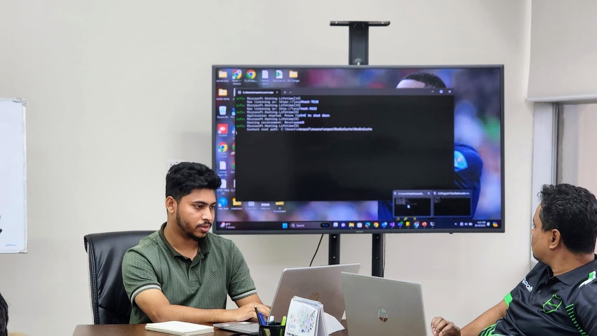
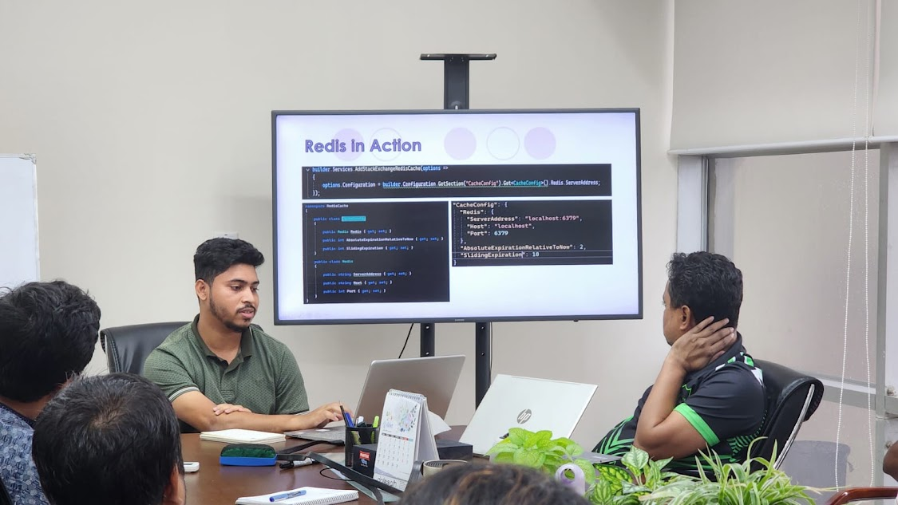
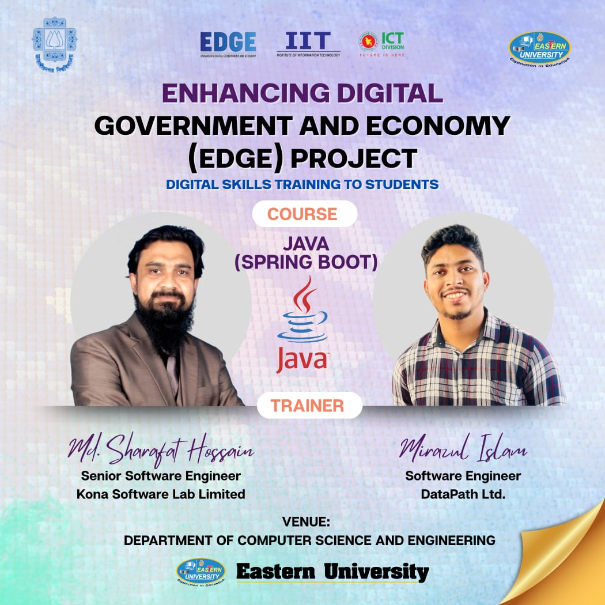
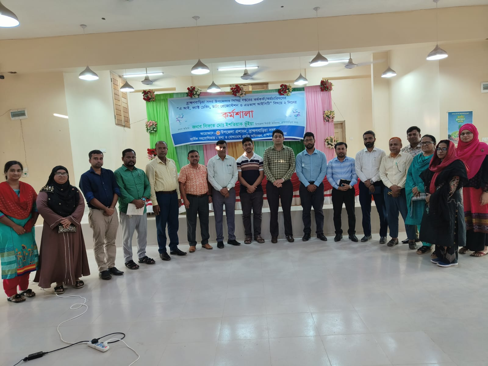

Payroll Integration Platform
Integrations · APIs · Webhooks · Messaging
↗I build reliable software systems and teach the next generation of developers.
Software engineering, teaching, and an interest in dependable intelligent systems.
I am a Software Engineer-II at DataPath Ltd. and an Adjunct Lecturer at Northern University Bangladesh. My professional work focuses on backend and full-stack development, APIs, databases, integrations, and distributed application components.
My undergraduate research focused on fault-tolerant computing and improving system reliability in the presence of soft errors. I am now interested in exploring the connection between dependable systems, software engineering, AI, and machine learning.
Research on fault-tolerant computing and improving system reliability affected by soft errors, including algorithms for detecting and correcting multiple adjacent bit errors.
Publication: Springer book chapter · DOI ↗




Integrations · APIs · Webhooks · Messaging
↗Error control · Reliability · Algorithms
↗